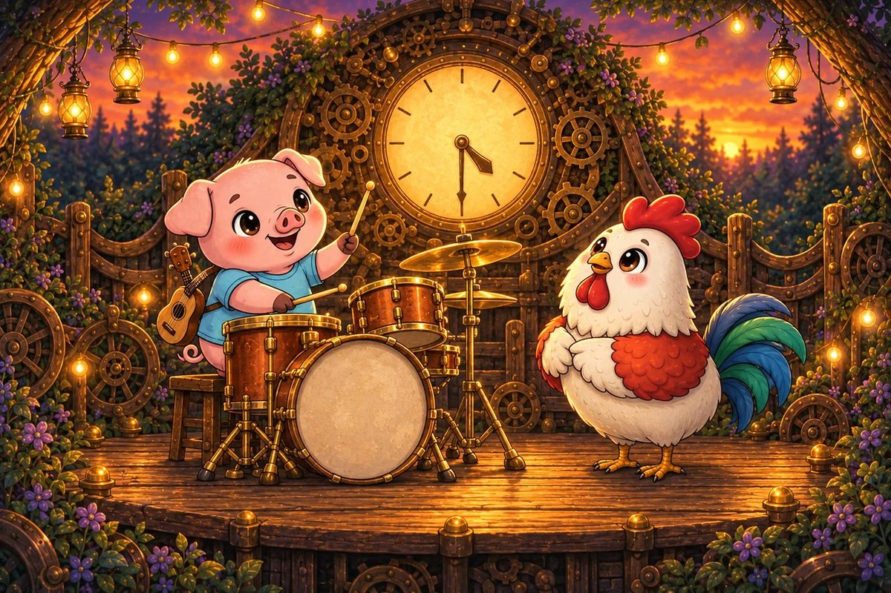
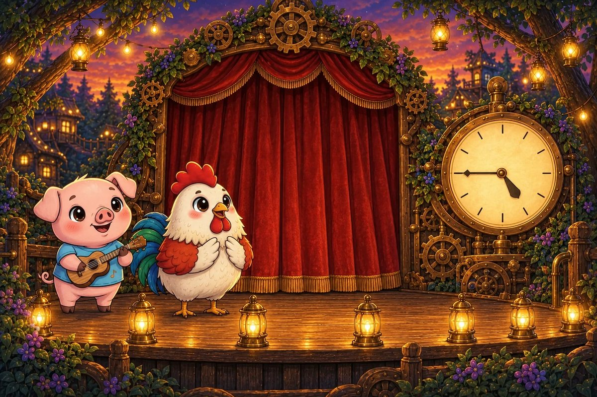
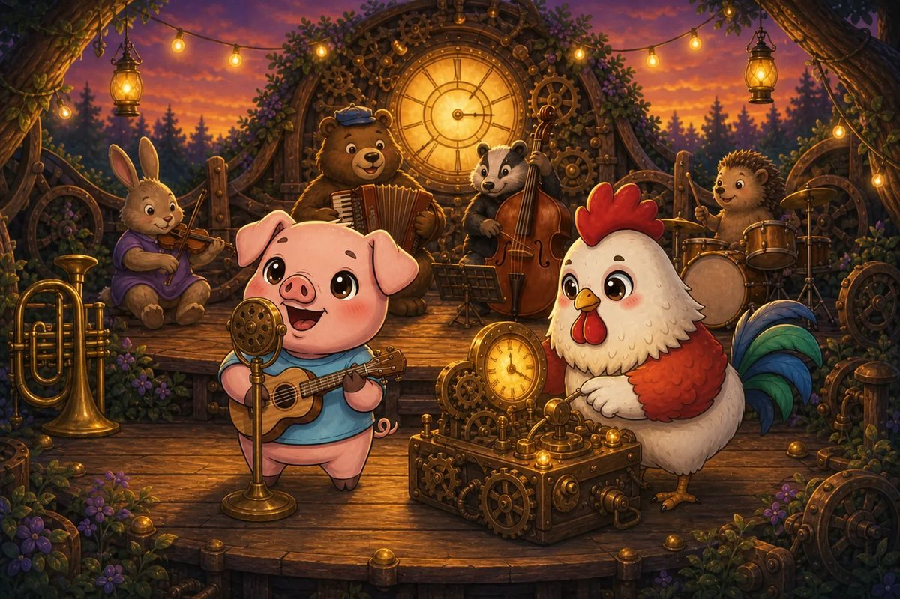
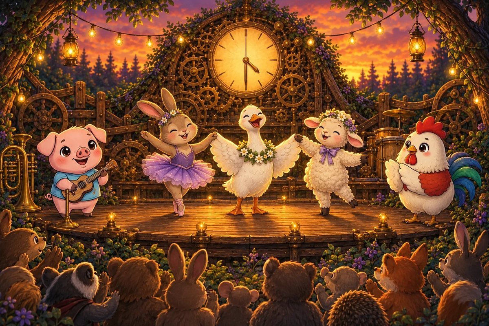
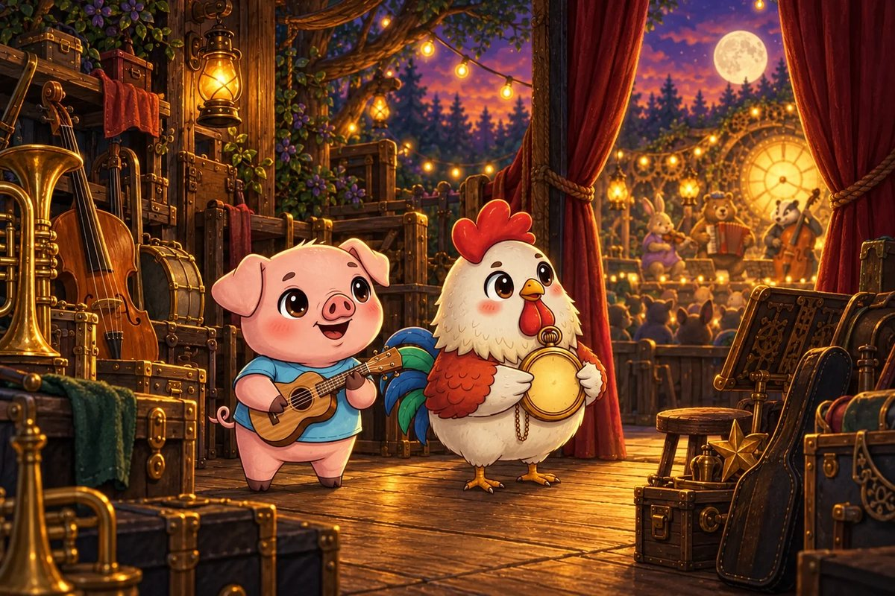
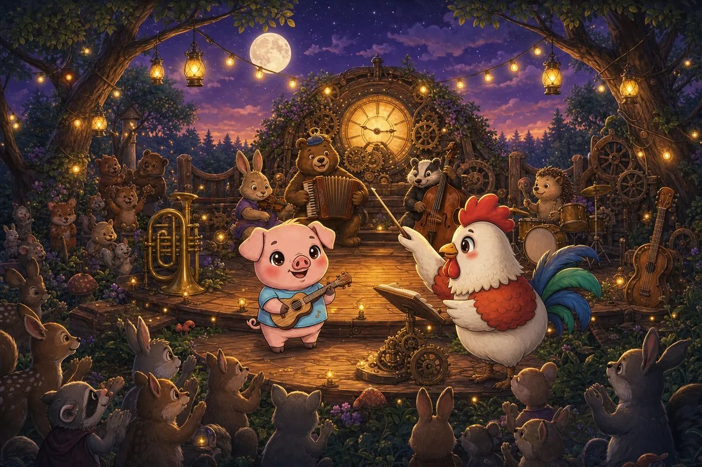

Pork-ulele promises to rehearse at quarter past three. Cluck O’Clock points to the minute hand travelling one quarter around the clock.
Try it: How many minutes past the hour is quarter past?
10
15
20
30
Show the answer
15. A full clock is 60 minutes. One quarter of 60 is 15 minutes.

Page 2 of 7 · Half-Past Drum Check
The drum check begins at half past four. The minute hand has travelled halfway around the clock face.
Try it: How many minutes past four is half past four?
15
25
30
45
Show the answer
30. Half of 60 minutes is 30 minutes.

Page 3 of 7 · Quarter To Curtain
The curtain must rise at five o’clock. It is quarter to five when the lantern crew finishes.
Try it: How many minutes remain until five o’clock?
5
10
15
30
Show the answer
15. Quarter to means one quarter of an hour remains: 15 minutes.

Page 4 of 7 · The Long Sound Check
Sound check starts at 4:10 and ends at 4:45. Pork-ulele keeps every musician calm while Cluck watches the hands.
Try it: How many minutes does sound check last?
25
30
35
45
Show the answer
35. Count from 4:10 to 4:40 = 30 minutes, then 5 more minutes to 4:45. Total 35.

Page 5 of 7 · One Whole Hour
The dancers practise from 3:30 until 4:30. They finish exactly when the second hand completes its final circle.
Try it: How many minutes are in one hour?
30
45
60
90
Show the answer
60. One complete hour always contains 60 minutes.

Page 6 of 7 · A Short Encore
The main show lasts 50 minutes and the hall is booked for 70 minutes. The remaining time can become an encore.
Try it: How many minutes are available for the encore?
10
15
20
30
Show the answer
20. Subtract the show from the booking: 70 − 50 = 20 minutes.

Page 7 of 7 · Music Right on Time
The concert and tidy-up together take one hour and 30 minutes. Every performer leaves beneath a chiming moon.
Try it: How many minutes is one hour and 30 minutes?
60
75
90
130
Show the answer
90. One hour is 60 minutes. Add 30 more: 60 + 30 = 90.
The end · Great maths
Seven questions, one story.
Try the story again without peeking, or print it and work the questions on paper. SnackPack Basic Math has the rest of the story shelf, daily practice and number games.